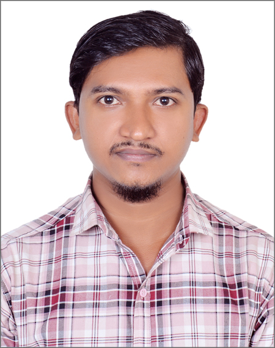

KSRM Billet Industries Ltd. (KBIL)
Asst. Foreman — Automation & General Electrical; previously Senior Technician — Electrical & Motor Rewinding.
Asst. Foreman · Automation & General Electrical
Industrial electrical maintenance, PLC/SCADA integration, energy monitoring, motor technical and practical automation solutions.

An industrial electrical and automation professional with experience across steel, manufacturing, food processing and plant maintenance environments. Work spans electrical troubleshooting, motor rewinding, PLC and drive systems, metering integration, SCADA recovery and browser-based energy monitoring.
Select a capability to view details.
Choose any skill card above to see the related tools and experience.
Project summaries are based on the supplied work history and achievement reports.
Open a project card to read its summary.
Open or download the reports supplied for the KSRM EMS project.
Reports describe technical work associated with an industrial system. Confirm authorization before publishing company-confidential material publicly.
Asst. Foreman — Automation & General Electrical; previously Senior Technician — Electrical & Motor Rewinding.
Senior Technician — Electrical & Motor Rewinding.
Senior Electrician — Motor Winding.
Motor Winder — Motor Winding.
Electrician — Electrical.
For professional enquiries, please contact me directly.
Kumira, Chattogram, Bangladesh
Send an Email ↗